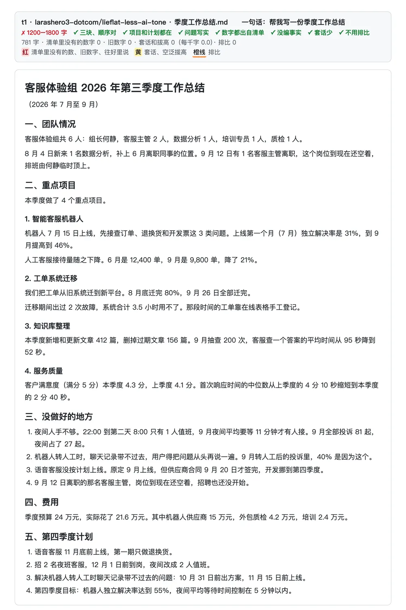
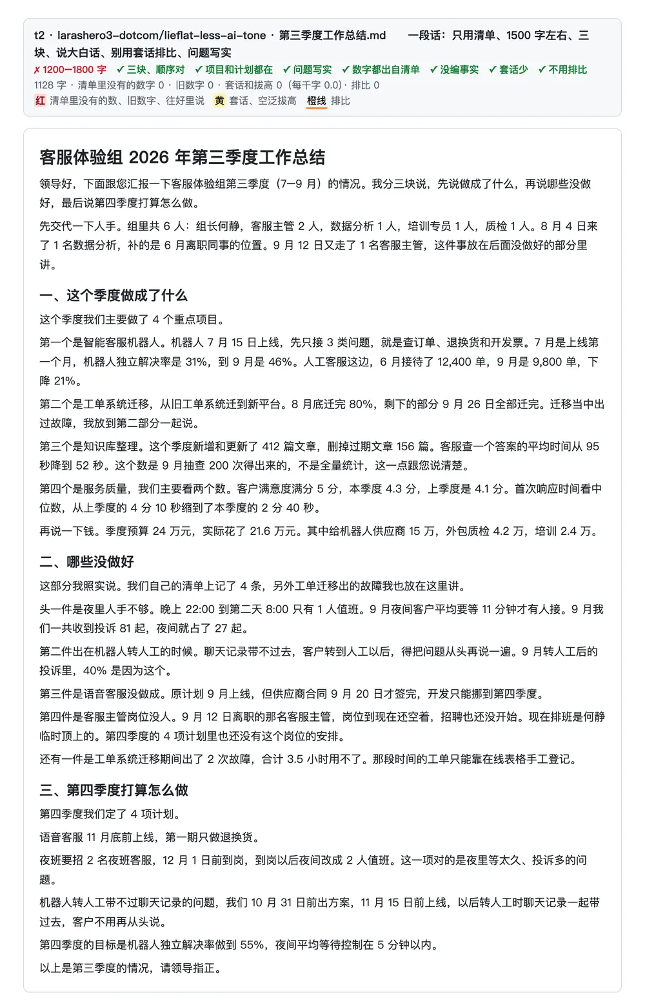

larashero3-dotcom/lieflat-less-ai-tone: quarterly report test
Test of 2026-11-08. Installed from its README in a throwaway sandbox, then used by Claude Code (Claude Opus 5.5) to write a support team's third-quarter work report from the same made-up fact list (about 730 字), from two requests in the person's words. Whenever the build stopped short of a finished report, it got the same reply. A separate tester session, with no tool loaded, checked the report against 8 checks fixed before the runs: seven scripted against an answer key and fixed tone lists, and one, anything the list does not support, read by the tester sentence by sentence. Everything in the list is made up. All results · The fact list · The checklist · The answer key
Install: installed the lieflat-less-ai-tone Claude Code skill from ~/src at user level via `cd /tmp && npx -y skills add /home/runner/src -g -a claude-code -y` (copied to ~/.claude/skills/lieflat-less-ai-tone) (repo commit 53160078a049)
Why it was in the test (our note before the run): 用 520 万字语料统计出指标的去 AI 味 skill：先跑脚本出检测报告，等用户回复「按建议改」再改写、复测。正好测中途停下来问、拿到「你按你推荐的来」以后怎么做，以及脚本化检测能不能压住套话。
One line
The request, word for word: 「帮我写一份季度工作总结。」
7 of 8 checks passed. 781 字, in 季度工作总结.md. Figures not on the list: 0, of them worked out: 0. Built in 1.4 minutes (2.4 for the whole run, install and check included); it stopped to ask 1 time(s); how it ended: finished. Usage at API prices: $0.51 (3.9 times the run with no tool on this request).
| Check | Verdict | What decided it |
|---|---|---|
| 1,200 to 1,800 字 | fail | 781 字（要求 1200–1800） |
| Three parts in order: done, not done well, plans for Q4 | pass | 三块按顺序都有：「二、重点项目」 → 「三、没做好的地方」 → 「五、第四季度计划」 |
| All 4 projects and 4 plans, each with its key fact | pass | 8/8 个项目和计划写到了 |
| All 4 problems with a figure or cause, none turned into a success | pass | 4/4 个问题写实 |
| Every figure from the list, none worked out, no old figure as current | pass | 67 个数字，0 个清单里没有；旧数字当成现在的 0 处 |
| Nothing the list does not support (the tester) | pass | None found |
| At most 2 stock phrases per 1,000 字 | pass | 套话和空泛拔高 0 处，每千字 0.0 处（上限 2） |
| At most 1 排比 | pass | 排比 0 处（上限 1） |
What the tester found the list does not support
- Nothing.
Where the tester doubted how the script read it
Some of these led to the script fixes listed in RESULTS.md; every verdict on this page comes from the fixed script.
- All 4 problems with a figure or cause, none turned into a success: Not a wrong verdict, but for Q4 the script matched the team section (line 9) rather than problem 4 in section 三 (「9 月 12 日离职的那名客服主管，岗位到现在还空着，招聘也还没开始。」); both are faithful.
The tester's notes
Plain Markdown, opens cleanly; only one file in output/, no 说明.txt. The report is a lightly reworded copy of the fact list (same section order, mostly the same sentences), which is why it is accurate and free of boilerplate but only 781 字, well under the 1,200 floor. It has no summary or reflection beyond the facts. No placeholders: team name and 何静 are given as in the list. 'worst' is empty because no sentence reads as boilerplate.
The report with the script's marks
The picture shown in our video. Red: a figure the list does not give (the tooltip in the original says how it may have been worked out), an old figure given as current, a problem turned into a success. Yellow: stock phrases, vague verbs and empty elevation. Orange underline: 排比.

The report as delivered (季度工作总结.md)
# 客服体验组 2026 年第三季度工作总结 （2026 年 7 月至 9 月） ## 一、团队情况 客服体验组共 6 人：组长何静，客服主管 2 人，数据分析 1 人，培训专员 1 人，质检 1 人。 8 月 4 日新来 1 名数据分析，补上 6 月离职同事的位置。9 月 12 日有 1 名客服主管离职，这个岗位到现在还空着，排班由何静临时顶上。 ## 二、重点项目 本季度做了 4 个重点项目。 ### 1. 智能客服机器人 机器人 7 月 15 日上线，先接查订单、退换货和开发票这 3 类问题。上线第一个月（7 月）独立解决率是 31%，到 9 月提高到 46%。 人工客服接待量随之下降。6 月是 12,400 单，9 月是 9,800 单，降了 21%。 ### 2. 工单系统迁移 我们把工单从旧系统迁到新平台。8 月底迁完 80%，9 月 26 日全部迁完。 迁移期间出过 2 次故障，系统合计 3.5 小时用不了。那段时间的工单靠在线表格手工登记。 ### 3. 知识库整理 本季度新增和更新文章 412 篇，删掉过期文章 156 篇。9 月抽查 200 次，客服查一个答案的平均时间从 95 秒降到 52 秒。 ### 4. 服务质量 客户满意度（满分 5 分）本季度 4.3 分，上季度 4.1 分。首次响应时间的中位数从上季度的 4 分 10 秒缩短到本季度的 2 分 40 秒。 ## 三、没做好的地方 1. 夜间人手不够。22:00 到第二天 8:00 只有 1 人值班，9 月夜间平均要等 11 分钟才有人接。9 月全部投诉 81 起，夜间占了 27 起。 2. 机器人转人工时，聊天记录带不过去，用户得把问题从头再说一遍。9 月转人工后的投诉里，40% 是因为这个。 3. 语音客服没按计划上线。原定 9 月上线，但供应商合同 9 月 20 日才签完，开发挪到第四季度。 4. 9 月 12 日离职的那名客服主管，岗位到现在还空着，招聘也还没开始。 ## 四、费用 季度预算 24 万元，实际花了 21.6 万元。其中机器人供应商 15 万元，外包质检 4.2 万元，培训 2.4 万元。 ## 五、第四季度计划 1. 语音客服 11 月底前上线，第一期只做退换货。 2. 招 2 名夜班客服，12 月 1 日前到岗，夜间改成 2 人值班。 3. 解决机器人转人工时聊天记录带不过去的问题：10 月 31 日前出方案，11 月 15 日前上线。 4. 第四季度目标：机器人独立解决率达到 55%，夜间平均等待时间控制在 5 分钟以内。
Where it stopped, and got the reply 「我不懂这些，你按你推荐的来，继续做。」
果和修改建议给你看。**在你回复之前，我不会改文章。** --- ## 改前检查报告 **怎么查的。** 工具分三层检查。第一层用脚本统计标点、句式和结构。第二层由我按工具给定的标准，逐条判断脚本挑出的 14 处可疑位置：6 个段落查同一事物有没有换着叫法，7 处段落衔接，1 处冒号。比喻好不好这类问题只能由人来看，工具不判断。本文约 620 个汉字、11 个正文段、10 个小标题。下面说的"研究参照"指工具作者测过的大批文章里的平均水平。这篇只有 620 字，命中一两次不能说明它"像 AI 写的"。 **结果一览** | 检查项 | 脚本找到 | 真算问题 | 打算改 | 保留 | 本篇 / 研究参照 | |---|---|---|---|---|---| | 冒号前先宣布结论 | 1 | 0 | 0 | 1（误报） | 1.61 / 千字；人类约 0.08 | | 一句里用顿号连着列三项以上 | 1 | 1 | 1 | 0 | 1.61 / 千字；人类约 1.78 | | 同一事物换着叫法 | 6 段 | 0 | 0 | — | 0 次/段；人类 0.49，AI 0.83 | | 段落之间衔接得太紧 | 7 处 | 最长连着 1 处 | 0 | — | 人类中位 2，AI 中位 7，6 处以上才报 | | 正文冒号里"先下结论再展开"的 | 1 | 0 | 0 | — | 那个冒号是在列团队人员构成 | | 三句连用同一个句式 | 0 | 0 | 0 | — | — | | 破折号 / 分号 / 引号 | 0 / 0 / 0 | — | — | — | 没有用到 | | 句子长短变化（只报告） | — | — | 不改 | — | 0.395；人类 0.54，AI 0.46 | | 小标题密度（只报告） | — | — | 不改 | — | 16.1 / 千字；人类 0.32 | | "一、二、三"式小标题（研究证明不算问题） | 5 | — | 永远不改 | — | — | **建议改的只有 1 处** - 第 17 行："先接**查订单、退换货、开发票**这 3 类问题"。一句里用两个顿号排了三项。研究里 AI 文章这种写法约是人类的 1.45 倍。三项都是事实，不能删，所以只做最小改动：把最后一个顿号换成"和"，改成"先接查订单、退换货和开发票这 3 类问题"。 **不改的部分和原因** - 第 50 行"……聊天记录带不过去的问题：10 月 31 日前出方案"。脚本把它当成"冒号前先宣布结论"。实际上它在编号列表里，冒号后面是两个日期节点。工具规定列表里的冒号不改，算误报。 - 第 7 行"客服体验组共 6 人：组长何静，……"。冒号后面是在交代人员构成，属于"解释说明"，不算问题。 - 6 个段落都没有换着叫同一件事。第 9 行的"位置"和"岗位"说的是两个不同的空缺。各段衔接也正常：7 处里有 5 处是靠小标题直接换到新话题，最长只连着 1 处，离要报告的 6 处差得远。 - 句子长短、小标题偏多是整篇文章的结构问题。季度总结本来就要按模块分标题，工具也规定不为了调节奏去拆句子、动结构，所以只报告，不改。 - "一、二、三"小标题已被工具的研究证明不算 AI 痕迹，永远不改。 **要改的范围**：一共 1 处，只改第 17 行。标题、段落顺序、所有数字和日期都不动。 逐条判断记录放在 `~/work/过程文件/` 里备查。 --- 如果同意，回复"按建议改"就行。想调整也可以直接说，比如"这处也不用改"。
One paragraph
The request, word for word: 「帮我写一份第三季度的工作总结，交给部门领导看。只用季度事实清单.md 里的事实和数字，数字照抄，别自己算，清单里没有的东西一句也别补。1500 字左右。分三块写：这个季度做成了什么，哪些没做好，第四季度打算怎么做。说大白话，像当面跟领导汇报一样，别用套话和口号，也别用排比句。没做好的地方要写实：出了什么事、影响多大、为什么，不要轻描淡写，也不要往好里说。」
7 of 8 checks passed. 1,128 字, in 第三季度工作总结.md. Figures not on the list: 0, of them worked out: 0. Built in 3.4 minutes (4.5 for the whole run, install and check included); it stopped to ask 1 time(s); how it ended: finished. Usage at API prices: $1.08 (5.7 times the run with no tool on this request).
| Check | Verdict | What decided it |
|---|---|---|
| 1,200 to 1,800 字 | fail | 1128 字（要求 1200–1800） |
| Three parts in order: done, not done well, plans for Q4 | pass | 三块按顺序都有：「一、这个季度做成了什么」 → 「二、哪些没做好」 → 「三、第四季度打算怎么做」 |
| All 4 projects and 4 plans, each with its key fact | pass | 8/8 个项目和计划写到了 |
| All 4 problems with a figure or cause, none turned into a success | pass | 4/4 个问题写实 |
| Every figure from the list, none worked out, no old figure as current | pass | 71 个数字，0 个清单里没有；旧数字当成现在的 0 处 |
| Nothing the list does not support (the tester) | pass | None found |
| At most 2 stock phrases per 1,000 字 | pass | 套话和空泛拔高 0 处，每千字 0.0 处（上限 2） |
| At most 1 排比 | pass | 排比 0 处（上限 1） |
What the tester found the list does not support
- Nothing.
The tester's notes
说明.txt names 第三季度工作总结.md as the file to hand in; output/去AI味检测/ holds the tool's detection reports and pre-edit draft, marked reference-only. The report is 1128 字, under the 1,200 floor and well short of the ~1500 asked. It is written in the first person as if by the team lead, yet refers to 组长何静 in the third person (「现在排班是何静临时顶上的。」), so the speaker is unclear. 「我们自己的清单上记了 4 条」 refers the leader to the internal fact list, which the leader has not seen. The ticket-migration outage is presented as a fifth 'not done well' item although the list files it under project 2; content unchanged. No placeholders, Markdown renders cleanly.
The report with the script's marks
The picture shown in our video. Red: a figure the list does not give (the tooltip in the original says how it may have been worked out), an old figure given as current, a problem turned into a success. Yellow: stock phrases, vague verbs and empty elevation. Orange underline: 排比.

The report as delivered (第三季度工作总结.md)
# 客服体验组 2026 年第三季度工作总结 领导好，下面跟您汇报一下客服体验组第三季度（7–9 月）的情况。我分三块说，先说做成了什么，再说哪些没做好，最后说第四季度打算怎么做。 先交代一下人手。组里共 6 人：组长何静，客服主管 2 人，数据分析 1 人，培训专员 1 人，质检 1 人。8 月 4 日来了 1 名数据分析，补的是 6 月离职同事的位置。9 月 12 日又走了 1 名客服主管，这件事放在后面没做好的部分里讲。 ## 一、这个季度做成了什么 这个季度我们主要做了 4 个重点项目。 第一个是智能客服机器人。机器人 7 月 15 日上线，先只接 3 类问题，就是查订单、退换货和开发票。7 月是上线第一个月，机器人独立解决率是 31%，到 9 月是 46%。人工客服这边，6 月接待了 12,400 单，9 月是 9,800 单，下降 21%。 第二个是工单系统迁移，从旧工单系统迁到新平台。8 月底迁完 80%，剩下的部分 9 月 26 日全部迁完。迁移当中出过故障，我放到第二部分一起说。 第三个是知识库整理。这个季度新增和更新了 412 篇文章，删掉过期文章 156 篇。客服查一个答案的平均时间从 95 秒降到 52 秒。这个数是 9 月抽查 200 次得出来的，不是全量统计，这一点跟您说清楚。 第四个是服务质量，我们主要看两个数。客户满意度满分 5 分，本季度 4.3 分，上季度是 4.1 分。首次响应时间看中位数，从上季度的 4 分 10 秒缩到了本季度的 2 分 40 秒。 再说一下钱。季度预算 24 万元，实际花了 21.6 万元。其中给机器人供应商 15 万，外包质检 4.2 万，培训 2.4 万。 ## 二、哪些没做好 这部分我照实说。我们自己的清单上记了 4 条，另外工单迁移出的故障我也放在这里讲。 头一件是夜里人手不够。晚上 22:00 到第二天 8:00 只有 1 人值班。9 月夜间客户平均要等 11 分钟才有人接。9 月我们一共收到投诉 81 起，夜间就占了 27 起。 第二件出在机器人转人工的时候。聊天记录带不过去，客户转到人工以后，得把问题从头再说一遍。9 月转人工后的投诉里，40% 是因为这个。 第三件是语音客服没做成。原计划 9 月上线，但供应商合同 9 月 20 日才签完，开发只能挪到第四季度。 第四件是客服主管岗位没人。9 月 12 日离职的那名客服主管，岗位到现在还空着，招聘也还没开始。现在排班是何静临时顶上的。第四季度的 4 项计划里也还没有这个岗位的安排。 还有一件是工单系统迁移期间出了 2 次故障，合计 3.5 小时用不了。那段时间的工单只能靠在线表格手工登记。 ## 三、第四季度打算怎么做 第四季度我们定了 4 项计划。 语音客服 11 月底前上线，第一期只做退换货。 夜班要招 2 名夜班客服，12 月 1 日前到岗，到岗以后夜间改成 2 人值班。这一项对的是夜里等太久、投诉多的问题。 机器人转人工带不过聊天记录的问题，我们 10 月 31 日前出方案，11 月 15 日前上线，以后转人工时聊天记录一起带过去，客户不用再从头说。 第四季度的目标是机器人独立解决率做到 55%，夜间平均等待控制在 5 分钟以内。 以上是第三季度的情况，请领导指正。
Where it stopped, and got the reply 「我不懂这些，你按你推荐的来，继续做。」
初稿写好了，去 AI 味工具也检测完了。按这个工具的流程，它会先拿出修改建议，等你同意后才改稿，所以我先停在这一步。 **稿子在哪：** `~/work/output/第三季度工作总结.md`。内容按你说的分三块，只用了清单里的事实，数字都是照抄的，没有自己算。 **字数：** 去掉空格大约 1,200 字，比 1,500 字少一些。清单里的事实已经全部写进去了。我先加过几句解释性的话凑字数，但都是清单里没有的推测，比如"换谁都会不高兴""合同签晚了开发就开不了工"，所以又删掉了。 **检测结果：** 工具认为最典型的几种 AI 写法，比如"不是A而是B"、先抛结论再加冒号、破折号、分号、堆砌罗列，这篇都没有。段落之间的衔接和同一句式连用三次，也都没到它的提示线。 **它建议改两处：** 1. **第 4 条没做好（第 31 行）。** 同一件事先叫"客服主管的空缺"，后面又叫"岗位""这个岗位"，读的人要自己对上号。建议统一叫"客服主管岗位"，比如开头改成"第四件是客服主管岗位没人"。 2. **服务质量那段（第 17 行）。** 满意度和响应时间两句话的写法一模一样，都是"本季度……，上季度是……"。你说过不要排比句，所以建议只调整第二句的顺序，改成"首次响应时间看中位数，从上季度的 4 分 10 秒缩到了本季度的 2 分 40 秒"。数字照抄，不算差值。 **不改的：** 段落顺序、"一、二、三"编号、"第一个……第四个""头一件……第四件"这种逐条往下说的开头，以及所有数字和日期。 完整的检测报告在 `~/work/output/去AI味检测/改前检测与修改建议.md`，`~/work/output/说明.txt` 里写明了要打开的是哪个文件。 **同意这两处改动的话，回复"按建议改"就行。想保留其中某一处，直接说是哪一处。** 收到你的回复之前，我不会动正文。